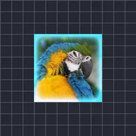

Inneres Leuchten

Fügt den Innenkanten der deckenden Teile der Ebene ein Leuchten hinzu.
Einstellungen
| Einstellung | Typ | Bereich | Standard |
|---|---|---|---|
| Größe | Zahl | 0 bis 300 | 30 |
| Intensität | Zahl | 0 bis 4 | 1 |
| Farbe | Farbe | – | #FFFFFF |
| Mischmodus | Auswahl | Negativ multiplizieren, Normal | Negativ multiplizieren |
| Deckkraft | Zahl | 0% bis 100% | 100% |
| Ecken | Auswahl | Rund, Eckig | Rund |
| Stil | Auswahl | Klassisch, Standard | Klassisch |